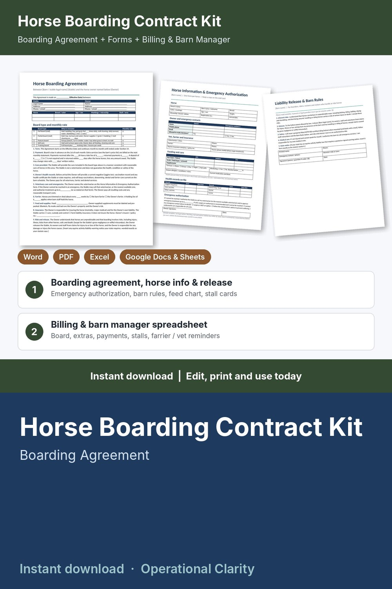

Horse Boarding Contract Kit

Sign up boarders, bill board and extras, and keep every horse's farrier and vet care on schedule: a complete horse boarding contract kit with a working billing and barn manager spreadsheet, not just a one-page Canva contract.
WHAT'S INSIDE
- Horse Boarding Agreement (Word + PDF): 15 sections - full, partial, pasture, self-care and training board with what each includes and the monthly rate, payment and late fees, deposit, care provided, health records, vet emergencies and spending limit, farrier, feed and supplies, insurance, risk and release, barn rules, removal of the horse, unpaid board and lien, abandonment, termination, signatures.
- Horse Information & Emergency Authorization (Word + PDF): horse ID and markings, owner and emergency contacts, vet / farrier / insurer, feeding and turnout, health records on file, emergency treatment limit and colic-surgery wishes.
- Liability Release & Barn Rules (Word + PDF): release for boarders, riders and visitors with a placeholder for your state's equine activity notice, plus editable barn rules to post.
- Barn Care Forms (Word + PDF): feed chart, two stall cards, farrier / vet / health record, monthly care log.
- Horse Boarding Billing & Barn Manager (Excel / Google Sheets, 9 tabs):
* Settings: board types and monthly rates, extra services price list, late fee, grace days, care reminder intervals
* Stalls: stalls, paddocks and pastures with capacity; occupied, open spots and VACANT / FULL status
* Horses: owner, board type, stall, start / end month; months billed, board, extras, total charges, paid, balance, overdue and status (PAID UP / DUE SOON / OVERDUE), next farrier, deworming, vaccines, Coggins expiry and care alert
* Services log: blanketing, farrier and vet holds, supplements, shavings, lessons - price fills in, or type a custom price
* Payments log, matched to each horse and owner
* Care log: next due date and DUE SOON / OVERDUE alerts for farrier, deworming, vaccines, dental and Coggins
* Statement: type a horse ID and month for a printable monthly statement with board, itemized extras, payments and amount due
* Dashboard: horses boarded, occupancy, monthly board roll, collected, outstanding, overdue, care due, board type mix, month-by-month chart
- START HERE guide (PDF)
HOW IT WORKS
1. Type your board rates, extra services and stalls in the spreadsheet.
2. Fill in the Boarding Agreement with the same rates; have each owner sign it with the Horse Information form.
3. Add each horse: board, charges and balance calculate.
4. Log extras, payments and farrier / vet visits; print statements on the 1st and check the Dashboard for overdue accounts and care due.
Example barn data (16 stalls, 2 pastures, 22 horses) shows how it all connects; delete it and type your own. Yellow cells = type here, green cells = calculated.
FORMATS
- Word .docx (edit in Microsoft Word, Google Docs, Pages or LibreOffice) + PDF, US Letter
- Excel .xlsx (works in Excel and Google Sheets)
This is an instant digital download, no physical item will be shipped.
Editable template, not legal advice. Boarding, lien and equine liability laws differ by state; have it reviewed by a local attorney before you use it. Care intervals and health notes are information only, not veterinary advice.